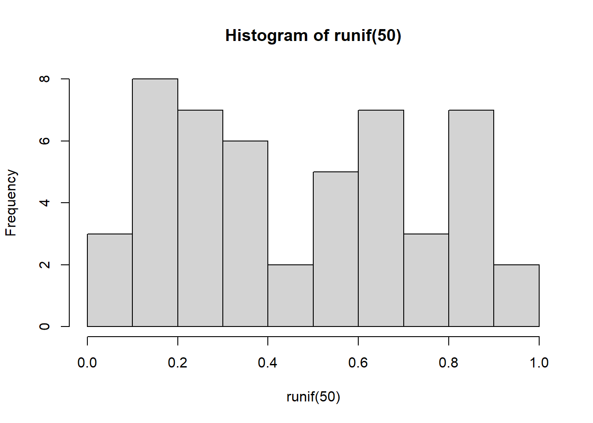
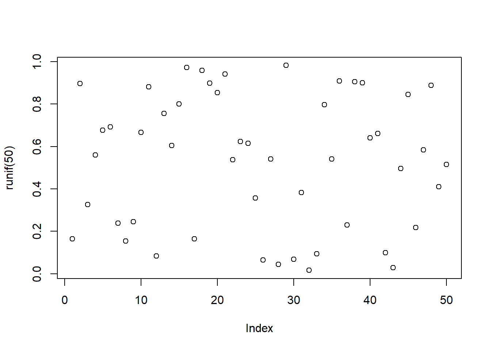
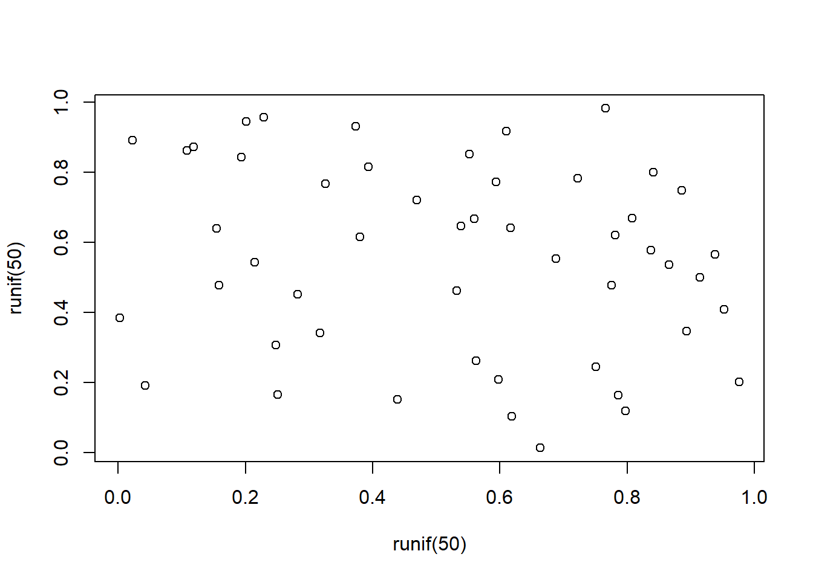
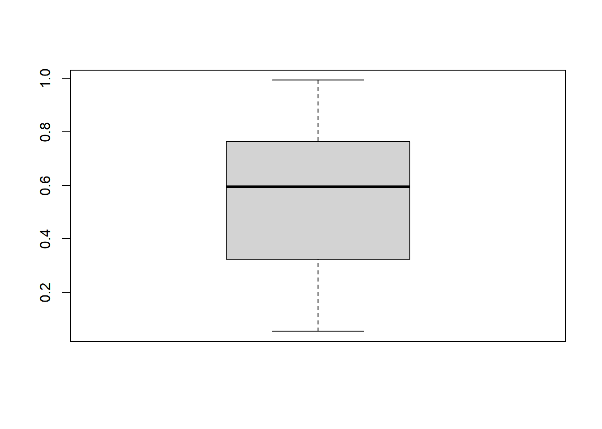
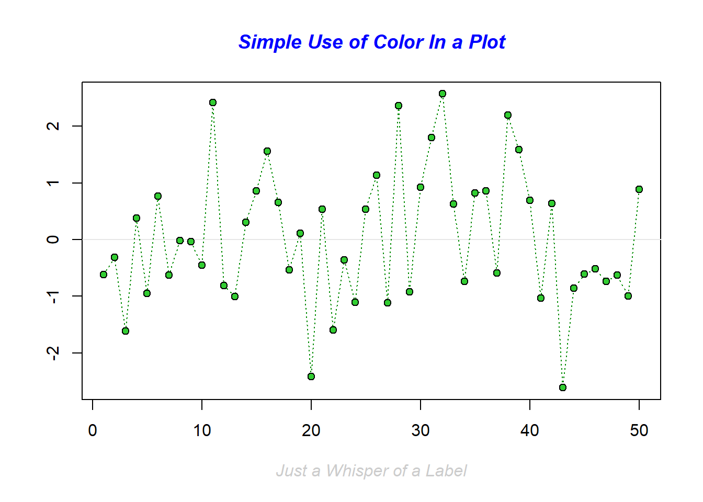
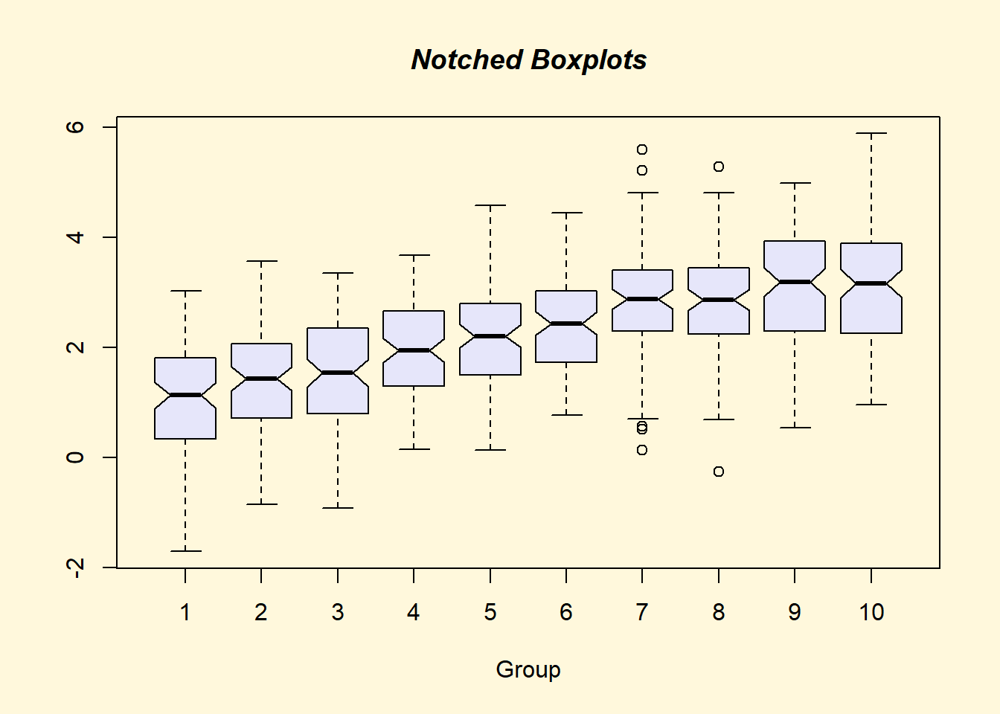
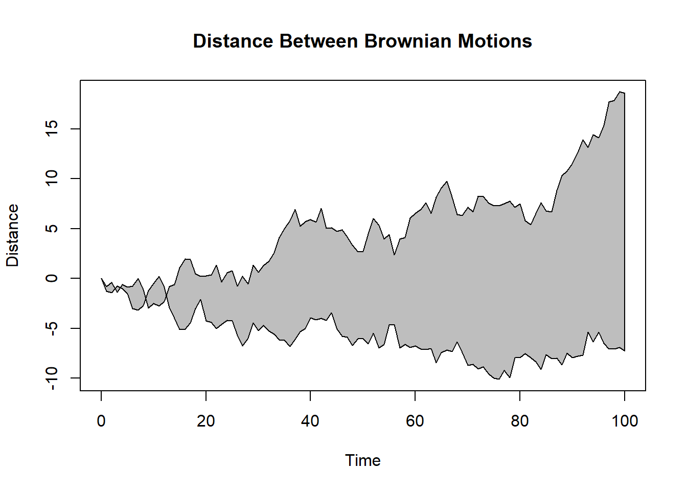
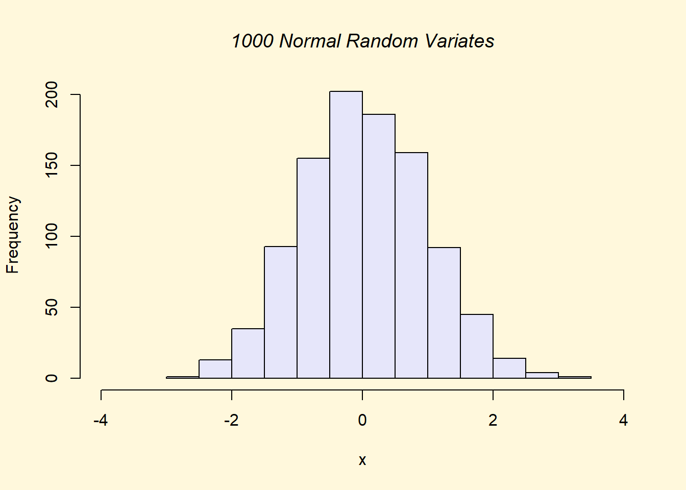
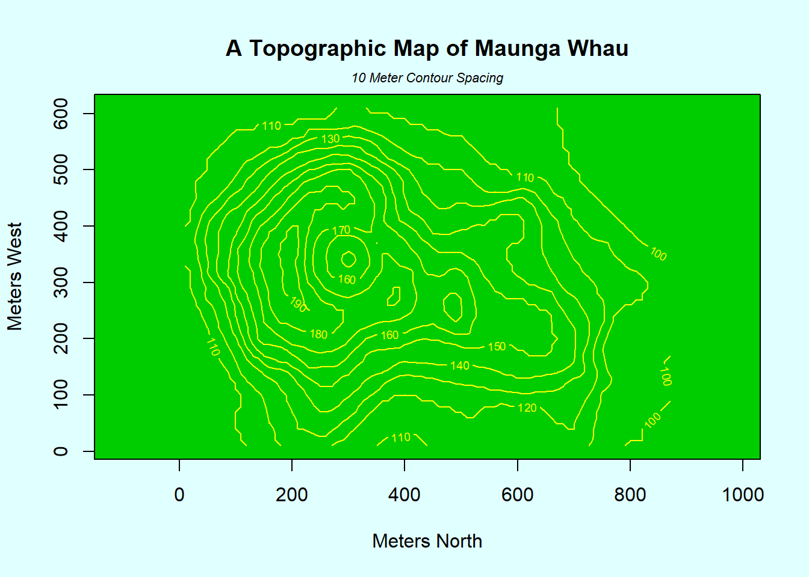

Module 7
The Book of R: chapter 7.1, 7.2 (plots), ?system2
Module 6 review
Built in functions
mysum = function(arg1) { return (sum(arg1)) }
Regular expressions
- b[ce]+d
- b[ce]*d
Exercise: A useful function (10 minutes)
Following on from the previous exercise where you found a string matching a regular expression…
Write a function that returns all the matches of a regular expression in a string
Hint: use substring (not substr) – why?
Test that the function works in the same way as in the previous exercise (by searching DNA for G..A)
Exercise solution (5 minutes)
Interfacing with external programs
- You can call/execute an external program from within your script
- Helps you automate certain tasks that would be difficult for you to do within R e.g. useful programs that are not available in R
# system2() #calls an external command
system2("ls") #unix/mac## Warning in system2("ls"): '"ls"' not foundsystem2("cmd.exe", input="dir") #windowssystem2 function
#returns stdout in variable v
v = system2("ls", stdout=T)
v
#passes arguments to the command (ls)
v = system2("ls", args="-la", stdout=T)
v- What’s wrong with system()?
- It works, but is older and not recommended
Exercise: external programs (10 minutes)
Write a script to call a system command
- Mac/unix users
- Run the “df –h” UNIX command from the shell – what does it do?
- Call “df -h” from R to see how much space is left on your hard drive
- Check your results against the “df -h” command you ran
- Windows users
- Try to run windows “time” or “dir” commands
- E.g. system2(“cmd.exe”, input=“dir”)
- Can also try shell(“dir”)
Exercise solution (5 minutes)
Recipes
Code examples and templates
- Recipes are standard way to do things
- Look up the recipes in a cookbook

R recipe book
Example recipes
#Sorting a data frame
data_frame = data_frame[order(data_frame$key) , ]
#data_frame$key is the column to sort by
#Note: the sort() function only works for vectors, not data frames
#Sorting by two columns
data_frame = data_frame[order(data_frame$key1,data_frame$key2) , ]
#The second key is used to break ties in the first
#Removing elements from a list
#Set the value to be NULLStack Overflow
- User-contributed question and answer website – good free source of recipes
- e.g. How to delete multiple values from a vector?
Plots
Graphically plotting/charting data
Introduction to plots
#R has powerful data plotting abilities
hist(runif(50))
plot(runif(50))
plot(runif(50), runif(50)) #x,y scatter plot
boxplot(runif(50))
demo(graphics)##
##
## demo(graphics)
## ---- ~~~~~~~~
##
## > # Copyright (C) 1997-2009 The R Core Team
## >
## > require(datasets)
##
## > require(grDevices); require(graphics)
##
## > ## Here is some code which illustrates some of the differences between
## > ## R and S graphics capabilities. Note that colors are generally specified
## > ## by a character string name (taken from the X11 rgb.txt file) and that line
## > ## textures are given similarly. The parameter "bg" sets the background
## > ## parameter for the plot and there is also an "fg" parameter which sets
## > ## the foreground color.
## >
## >
## > x <- stats::rnorm(50)
##
## > opar <- par(bg = "white")
##
## > plot(x, ann = FALSE, type = "n")
##
## > abline(h = 0, col = gray(.90))
##
## > lines(x, col = "green4", lty = "dotted")
##
## > points(x, bg = "limegreen", pch = 21)
##
## > title(main = "Simple Use of Color In a Plot",
## + xlab = "Just a Whisper of a Label",
## + col.main = "blue", col.lab = gray(.8),
## + cex.main = 1.2, cex.lab = 1.0, font.main = 4, font.lab = 3)
##
## > ## A little color wheel. This code just plots equally spaced hues in
## > ## a pie chart. If you have a cheap SVGA monitor (like me) you will
## > ## probably find that numerically equispaced does not mean visually
## > ## equispaced. On my display at home, these colors tend to cluster at
## > ## the RGB primaries. On the other hand on the SGI Indy at work the
## > ## effect is near perfect.
## >
## > par(bg = "gray")
##
## > pie(rep(1,24), col = rainbow(24), radius = 0.9)##
## > title(main = "A Sample Color Wheel", cex.main = 1.4, font.main = 3)
##
## > title(xlab = "(Use this as a test of monitor linearity)",
## + cex.lab = 0.8, font.lab = 3)
##
## > ## We have already confessed to having these. This is just showing off X11
## > ## color names (and the example (from the postscript manual) is pretty "cute".
## >
## > pie.sales <- c(0.12, 0.3, 0.26, 0.16, 0.04, 0.12)
##
## > names(pie.sales) <- c("Blueberry", "Cherry",
## + "Apple", "Boston Cream", "Other", "Vanilla Cream")
##
## > pie(pie.sales,
## + col = c("purple","violetred1","green3","cornsilk","cyan","white"))
##
## > title(main = "January Pie Sales", cex.main = 1.8, font.main = 1)
##
## > title(xlab = "(Don't try this at home kids)", cex.lab = 0.8, font.lab = 3)
##
## > ## Boxplots: I couldn't resist the capability for filling the "box".
## > ## The use of color seems like a useful addition, it focuses attention
## > ## on the central bulk of the data.
## >
## > par(bg="cornsilk")
##
## > n <- 10
##
## > g <- gl(n, 100, n*100)
##
## > x <- rnorm(n*100) + sqrt(as.numeric(g))
##
## > boxplot(split(x,g), col="lavender", notch=TRUE)
##
## > title(main="Notched Boxplots", xlab="Group", font.main=4, font.lab=1)
##
## > ## An example showing how to fill between curves.
## >
## > par(bg="white")
##
## > n <- 100
##
## > x <- c(0,cumsum(rnorm(n)))
##
## > y <- c(0,cumsum(rnorm(n)))
##
## > xx <- c(0:n, n:0)
##
## > yy <- c(x, rev(y))
##
## > plot(xx, yy, type="n", xlab="Time", ylab="Distance")
##
## > polygon(xx, yy, col="gray")
##
## > title("Distance Between Brownian Motions")
##
## > ## Colored plot margins, axis labels and titles. You do need to be
## > ## careful with these kinds of effects. It's easy to go completely
## > ## over the top and you can end up with your lunch all over the keyboard.
## > ## On the other hand, my market research clients love it.
## >
## > x <- c(0.00, 0.40, 0.86, 0.85, 0.69, 0.48, 0.54, 1.09, 1.11, 1.73, 2.05, 2.02)
##
## > par(bg="lightgray")
##
## > plot(x, type="n", axes=FALSE, ann=FALSE)##
## > usr <- par("usr")
##
## > rect(usr[1], usr[3], usr[2], usr[4], col="cornsilk", border="black")
##
## > lines(x, col="blue")
##
## > points(x, pch=21, bg="lightcyan", cex=1.25)
##
## > axis(2, col.axis="blue", las=1)
##
## > axis(1, at=1:12, lab=month.abb, col.axis="blue")
##
## > box()
##
## > title(main= "The Level of Interest in R", font.main=4, col.main="red")
##
## > title(xlab= "1996", col.lab="red")
##
## > ## A filled histogram, showing how to change the font used for the
## > ## main title without changing the other annotation.
## >
## > par(bg="cornsilk")
##
## > x <- rnorm(1000)
##
## > hist(x, xlim=range(-4, 4, x), col="lavender", main="")
##
## > title(main="1000 Normal Random Variates", font.main=3)
##
## > ## A scatterplot matrix
## > ## The good old Iris data (yet again)
## >
## > pairs(iris[1:4], main="Edgar Anderson's Iris Data", font.main=4, pch=19)
##
## > pairs(iris[1:4], main="Edgar Anderson's Iris Data", pch=21,
## + bg = c("red", "green3", "blue")[unclass(iris$Species)])
##
## > ## Contour plotting
## > ## This produces a topographic map of one of Auckland's many volcanic "peaks".
## >
## > x <- 10*1:nrow(volcano)
##
## > y <- 10*1:ncol(volcano)
##
## > lev <- pretty(range(volcano), 10)
##
## > par(bg = "lightcyan")
##
## > pin <- par("pin")
##
## > xdelta <- diff(range(x))
##
## > ydelta <- diff(range(y))
##
## > xscale <- pin[1]/xdelta
##
## > yscale <- pin[2]/ydelta
##
## > scale <- min(xscale, yscale)
##
## > xadd <- 0.5*(pin[1]/scale - xdelta)
##
## > yadd <- 0.5*(pin[2]/scale - ydelta)
##
## > plot(numeric(0), numeric(0),
## + xlim = range(x)+c(-1,1)*xadd, ylim = range(y)+c(-1,1)*yadd,
## + type = "n", ann = FALSE)
##
## > usr <- par("usr")
##
## > rect(usr[1], usr[3], usr[2], usr[4], col="green3")
##
## > contour(x, y, volcano, levels = lev, col="yellow", lty="solid", add=TRUE)
##
## > box()
##
## > title("A Topographic Map of Maunga Whau", font= 4)
##
## > title(xlab = "Meters North", ylab = "Meters West", font= 3)
##
## > mtext("10 Meter Contour Spacing", side=3, line=0.35, outer=FALSE,
## + at = mean(par("usr")[1:2]), cex=0.7, font=3)
##
## > ## Conditioning plots
## >
## > par(bg="cornsilk")
##
## > coplot(lat ~ long | depth, data = quakes, pch = 21, bg = "green3")
##
## > par(opar)Exercise: plots (10 minutes)
Create a matrix “randomdata” with 50 rows and 10 columns using “replicate(10,rnorm(50))”
Plot the first and second columns of the matrix in a scatter plot
Generate a vector “randommeans” with the means of all columns of randomdata. Also generate a vector “randomsds” with the standard deviations of all columns of randomdata
Generate a boxplot of the first and second columns of randomdata